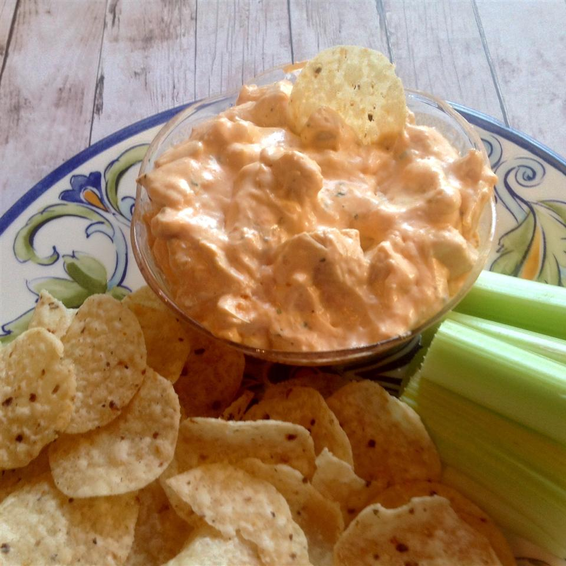

Buffalo Dip

Description
Buffalo dip is a great party snack!
Great football game food
Ingredients:
- 2 cups diced cooked chicken
- 8 ounce package of cream cheese
- 1/2 cup blue cheese salad dressing
- 1/2 cup hot pepper sauce
- 1/2 cup crumbled blue cheese
- 1/4 cup ranch dressing
Steps:
- Stir chicken, cream cheese, blue cheese dressing, hot pepper sauce, crumbled blue cheese, and ranch dressing together in a slow cooker.
- Cook in the slow cooker on high until heated through, about 20 minutes